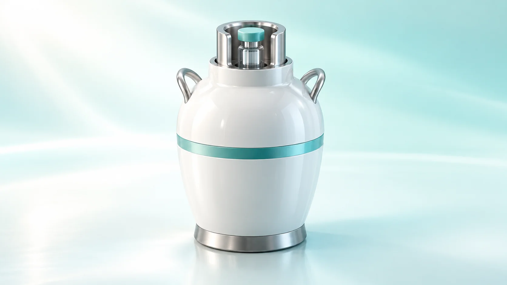
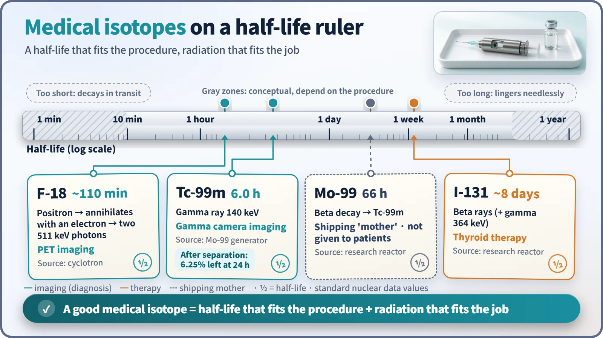
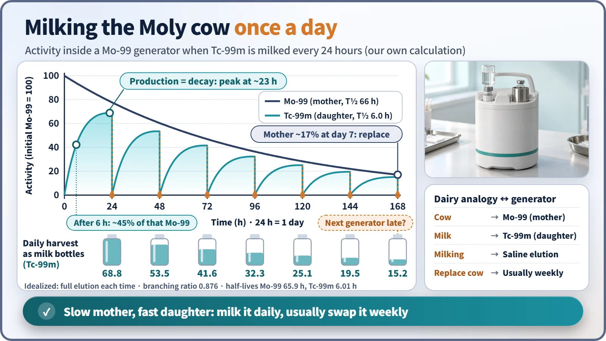

Society, Environment & the Future · 277
Milked Fresh Every Morning — Why Medical Radioisotopes Have to Be Just Right
Half-life, radiation type and a reliable supply all have to fit, which is why technetium-99m is milked fresh from a molybdenum-99 generator every day.

A good medical radioisotope is not the strongest one but the one that fits. Its half-life must match the procedure, its radiation must match the purpose, a carrier must take it where it is needed, and supply must never break. Technetium-99m, milked daily from a molybdenum-99 generator, shows all four at work.
Here's a strange thought experiment. Suppose a hospital wanted a picture of your bones and simply injected any substance that gives off radiation. What would happen?
If it were uranium, with a half-life of 4.5 billion years, the scan would be over in 30 minutes, but the substance would practically never dwindle inside your body. If it were something with a half-life of a few seconds, most of it would be gone before the nurse finished walking down the corridor with the syringe. That's why hospitals don't use just any radioactive material. Today let's follow the logic of the fit: why a medical radioisotope has to be that particular nuclide and not another.
Using a radioactive substance as a medicine
First, the definition. A medical radioisotope is a radioactive atom attached to a drug that is designed to collect in a particular organ or tissue, so its radiation can be used to image the inside of the body (diagnosis) or destroy target cells (therapy). The drug is the courier that decides where to go; the radioactive atom is the transmitter that calls out "I'm over here." Put the two together and you have a radiopharmaceutical.
The basics of radioactive decay and half-life are the same as anywhere else. The only thing medicine changes is that these properties are chosen to fit the job.
Rule one: match the half-life to the procedure
The most famous medical isotope is technetium-99m. It is used in about 80% of nuclear medicine procedures worldwide, tens of millions of scans every year. Its half-life is about 6 hours: enough time to prepare the drug, inject it, wait for it to spread through the body and take the pictures. Yet after one day it has gone through four half-lives, leaving 1/16, about 6%. [1]
A shorter half-life isn't automatically better, and neither is a longer one. The best half-life is the one that fits the procedure. Think of sushi: the fish has to be fresh, but it also has to survive the trip from the kitchen to your table.

Rule two: what does it give off?
Just as important as the half-life is what kind of radiation it emits, and at what energy.
Diagnosis needs gamma rays that pass through the body and come out the other side, because a camera outside the body catches that light and maps where it came from. Technetium-99m emits a gamma ray of 140 kiloelectronvolts (keV): strong enough to escape the body, yet an energy that a gamma camera detects very well. It also gives off almost no beta particles, which would leave their energy inside the body, so it sends only the signal needed for the picture. [2]
Fluorine-18, used in PET scans, works a little differently. It emits a positron, an "antimatter electron." When the positron meets an electron in the body, both vanish and two 511 keV gamma rays fly off in opposite directions. Connect the signals that arrive at detectors on both sides at the same moment, and you can see where they started. Attach fluorine-18 to a glucose-like molecule and you can image the cells that consume a lot of glucose. With a half-life of about 110 minutes, it has to be produced close to the hospital.
Therapy wants the opposite property: beta rays that don't travel far and dump their energy close by. Iodine-131 is the classic example. The thyroid gathers iodine on its own, so simply swallowing iodine-131 sends it there, where it pours its energy into cells within a few millimeters. Its half-life is about 8 days.
How one cow lasts a week
But there's a problem. If you make 6-hour technetium-99m at a distant reactor and fly it out, a large share will be gone by the time it arrives.
The solution is to deliver the mother instead. Molybdenum-99 has a half-life of about 66 hours, and as it decays it gives birth to technetium-99m. The mother is bound to a small column, packed in a shielded container and shipped to the hospital. When technetium is needed, staff run saline solution through the column and only the daughter, technetium-99m, washes out. The industry calls this device the "Moly cow," and drawing off the technetium is called "milking."

Run the numbers and you can see why this cow suits a morning routine. Right after milking, technetium-99m drops to zero. Six hours later it has refilled to about 45% of the mother's activity at that time, and as new production and decay balance out, it peaks after about 23 hours. Milking once a day is just right. But the cow ages too. After a week the mother is down to about 17% of where it started, so each day's milk is smaller than the last. That's why generators are usually replaced every week.
A non-stop relay from reactor to hospital
So where do the cows come from? Many people assume nuclear power plants, but most molybdenum-99 is made in research reactors. Fire neutrons at a uranium-235 target to make it fission, and about 6% of the fragments are molybdenum-99. It is separated chemically and loaded into generators. Fluorine-18, on the other hand, comes not from a reactor but from a cyclotron, an accelerator that whirls protons around and fires them at a target. [1]
This is where the weak point of the supply chain shows. Molybdenum-99 loses about 1% of itself every hour, so it can't be stockpiled in a warehouse. The relay of reactor irradiation, separation, generator manufacturing, air transport and hospital delivery can't break for even a day. Yet most of the world's supply comes from a handful of old research reactors. In 2009–2010, reactors in Canada and the Netherlands shut down for repairs around the same time, and hospitals around the world had to push back scans. Since then, the OECD Nuclear Energy Agency (OECD-NEA) has led discussions on securing supply, and alternative methods using accelerators are being researched. [3] [4]
The "it lingers" myth, and the art of the fit
Some people worry that after a scan their body has "become radioactive" and stays dangerous for a long time. Diagnostic nuclides are used only in the amount needed, chosen for short half-lives, and are also excreted from the body. As we saw, technetium-99m drops to a little over 6% within a day from decay alone. If there are any precautions to follow afterward, just follow your medical team's instructions.
In short, the key to a medical radioisotope is not strength but fit: a half-life that suits the procedure, radiation that suits the purpose, a courier that takes it where it needs to go, and a supply that never breaks. All four must line up before a hospital can use it. Radiotherapy machines that fire beams from outside the body are a different story, one worth telling on its own.